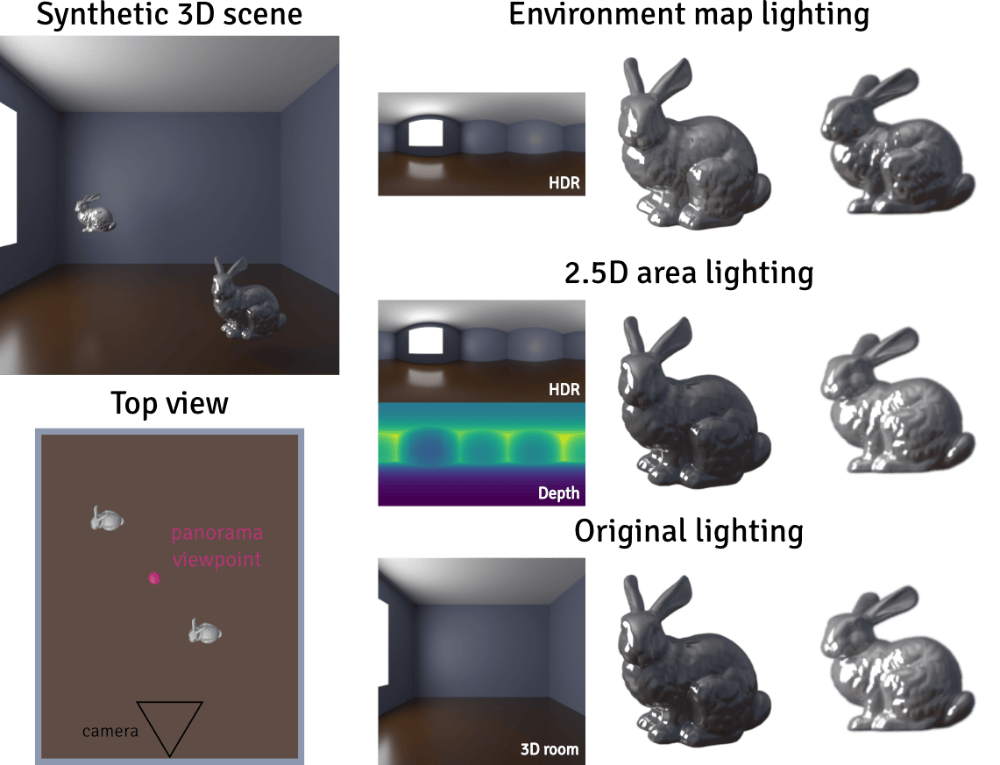
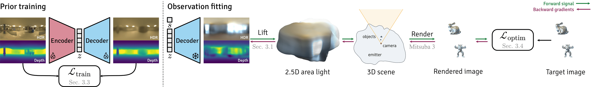
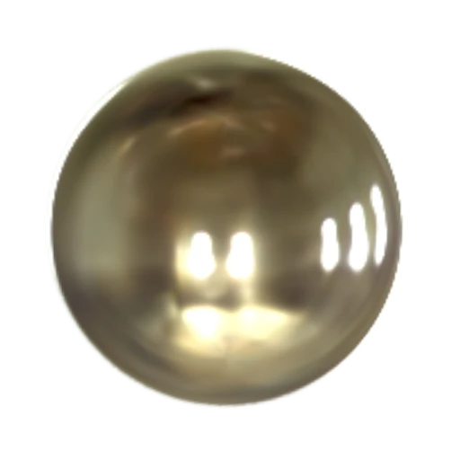
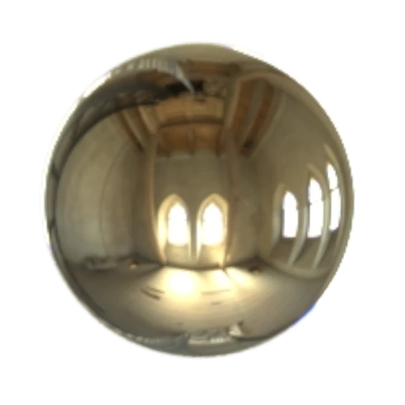

RoomLight: A 2.5D Illumination Prior for Indoor Environments
Friedrich-Alexander-Universität Erlangen-Nürnberg
TL;DR A learned prior over HDR panoramas and aligned depth, enabling differentiable optimization of spatially-varying indoor illumination.

Abstract
Ill-posed inverse problems require priors to constrain the solution space toward plausible outcomes. In inverse rendering, learned priors modeling the distribution of natural illumination improve the recovery of scene properties. However, existing models rely on the distant-illumination assumption, representing lighting as a far-field environment map. This limits their applicability to indoor scenes, where illumination is highly spatially varying due to finite-distance emitters, visibility changes, and parallax, all of which are poorly approximated by a single environment map. To address this, we introduce a spatially-aware illumination prior trained on real-world indoor panoramas and their estimated depth. Our variational autoencoder model learns a compact, optimizable latent space that decodes into HDR radiance and depth, parameterizing an area light emitter for direct integration into standard differentiable rendering pipelines. This design bridges the plausibility guarantees of a learned prior with the gradient flow required for downstream optimization. Crucially, by jointly modeling radiance and depth, our prior captures the spatial structure of indoor illumination, instead of treating the light sources as infinitely distant. We demonstrate that this formulation enables spatially-varying illumination modeling and achieves higher-fidelity recovery of indoor lighting compared to existing approaches.
Method

-
Prior training
A convolutional VAE is trained on equirectangular panoramas pairing HDR radiance with aligned depth, so a single global latent code z summarizes an entire indoor environment.
-
Lift to a 2.5D area light
The decoded radiance and depth maps are lifted into an emissive mesh. Adding one depth channel turns a direction-only environment map into a surface in space, so the light it casts varies with position.
-
Observation fitting
The encoder is discarded and the decoder frozen. The emitter lights the scene in a differentiable renderer; the photometric loss against the target is backpropagated to z and an exposure scale s.
Random samples from the prior
We draw latent codes from N(0, I), decode each into radiance and depth, and lift the resulting pair into a 2.5D area light. The generated samples depict coherent rooms with diverse layouts and distinct light sources. A glossy probe moving through each scene visualizes the emitter’s position-dependent illumination.
Per sample: a top view with the emitter's extent, the camera's field of view and the probe's path (top); the probe moving through the scene (bottom).
Application on real images
We deploy our prior as the illumination parameterization in an analysis-by-synthesis setting for inverse rendering, where scene parameters are recovered by rendering a hypothesis and comparing it against the observed image. Given a single real photograph as the target observation, we use off-the-shelf models to estimate the camera intrinsics, reconstruct a depth-based scene mesh, and segment the objects. We then assign a material to each object and jointly optimize the material and illumination parameters by minimizing the photometric loss through a differentiable renderer.
Evaluation on synthetic scenes
Each scene consists of a single low-dynamic-range observation of objects with known geometry, materials, and poses, viewed from a calibrated camera, with illumination as the only optimized variable. The scenes are constructed from 25 real indoor panoramas with estimated depth, which we lift into 2.5D area-light emitters illuminating three objects. A bunny and an armadillo provide the observations that drive the optimization, while a held-out sphere is used for evaluation.

Ours
Ground truthInteractive comparison
Side-by-side comparison of the methods and ground truth across three materials and three views: the zoomed-in evaluation probe, the fitted observation, and the full evaluation.
Open the viewerBibTeX
@article{ardelean2026roomlight,
title = {RoomLight: A 2.5D Illumination Prior for Indoor Environments},
author = {Ardelean, Andreea and Egger, Bernhard},
journal = {arXiv preprint arXiv:2609.28300},
year = {2026}
}Acknowledgements
We thank Paul Himmler and Timotei Ardelean for their constructive feedback during project development and manuscript preparation. The authors gratefully acknowledge the scientific support and HPC resources provided by the Erlangen National High Performance Computing Center (NHR@FAU) of the Friedrich-Alexander-Universität Erlangen-Nürnberg (FAU) under the NHR project b315dc RoomLight. NHR funding is provided by federal and Bavarian state authorities.